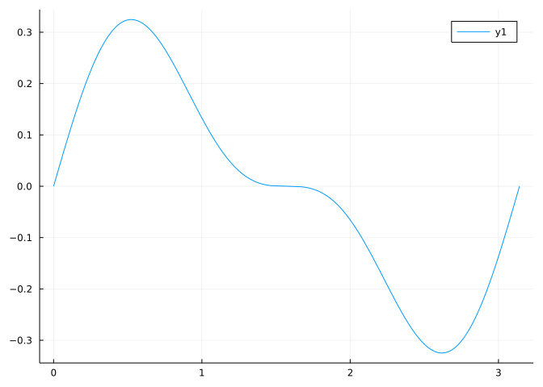

f(x) = cos(x)^3 * sin(x)
plot(f, 0, 1pi)
This section uses these add-on packages:
The technique of \(u\)-substitution is derived from reversing the chain rule: \([f(g(x))]' = f'(g(x)) g'(x)\).
Suppose that \(g\) is continuous and \(u(x)\) is differentiable with \(u'(x)\) being Riemann integrable. Then both these integrals are defined:
\[ \int_a^b g(u(t)) \cdot u'(t) dt, \quad \text{and}\quad \int_{u(a)}^{u(b)} g(x) dx. \]
We wish to show they are equal.
Let \(G\) be an antiderivative of \(g\), which exists as \(g\) is assumed to be continuous. (By the Fundamental Theorem part I.) Consider the composition \(G \circ u\). The chain rule gives:
\[ [G \circ u]'(t) = G'(u(t)) \cdot u'(t) = g(u(t)) \cdot u'(t). \]
So,
\[ \begin{align*} \int_a^b g(u(t)) \cdot u'(t) dt &= \int_a^b (G \circ u)'(t) dt\\ &= (G\circ u)(b) - (G\circ u)(a) \quad\text{(the FTC, part II)}\\ &= G(u(b)) - G(u(a)) \\ &= \int_{u(a)}^{u(b)} g(x) dx. \quad\text{(the FTC part II)} \end{align*} \]
That is, this substitution formula applies:
\(\int_a^b g(u(x)) u'(x) dx = \int_{u(a)}^{u(b)} g(x) dx.\)
Further, for indefinite integrals,
\(\int f(g(x)) g'(x) dx = \int f(u) du.\)
We have seen a special case of substitution where \(u(x) = x-c\) in the formula \(\int_{a-c}^{b-c} g(x) dx= \int_a^b g(x-c)dx\).
The main use of this is to take complicated things inside of the function \(g\) out of the function (the \(u(x)\)) by renaming them, then accounting for the change of name.
Some examples are in order.
Consider:
\[ \int_0^{\pi/2} \cos(x) e^{\sin(x)} dx. \]
Clearly the \(\sin(x)\) inside the exponential is an issue. If we let \(u(x) = \sin(x)\), then \(u'(x) = \cos(x)\), and this becomes
\[ \int_0^2 u\prime(x) e^{u(x)} dx = \int_{u(0)}^{u(\pi/2)} e^x dx = e^x \big|_{\sin(0)}^{\sin(\pi/2)} = e^1 - e^0. \]
This all worked, as the problem was such that it was more or less obvious what to choose for \(u\) and \(G\).
The process of identifying the result of the chain rule in the function to integrate is not automatic, but rather a bit of an art. The basic step is to try some values and hope one works. Typically, this is taught by “substituting” in some value for part of the expression (basically the \(u(x)\)) and seeing what happens.
In the above problem, \(\int_0^{\pi/2} \cos(x) e^{\sin(x)} dx\), we might just rename \(\sin(x)\) to be \(u\) (suppressing the “of \(x\) part). Then we need to rewrite the”\(dx\)” part of the integral. We know in this case that \(du/dx = \cos(x)\). In terms of differentials, this gives \(du = \cos(x) dx\). But this allows us to substitute in with \(u\) and \(du\) as is possible:
\[ \int_0^{\pi/2} \cos(x) e^{\sin(x)} dx = \int_0^{\pi/2} e^{\sin(x)} \cdot \cos(x) dx = \int_{u(0)}^{u(\pi)} e^u du. \]
Let’s illustrate with a new problem: \(\int_0^2 4x e^{x^2} dx\).
Again, we see that the \(x^2\) inside the exponential is a complication. Letting \(u = x^2\) we have \(du = 2x dx\). We have \(4xdx\) in the original problem, so we will end up with \(2du\):
\[ \int_0^2 4x e^{x^2} dx = 2\int_0^2 e^{x^2} \cdot 2x dx = 2\int_{u(0)}^{u(2)} e^u du = 2 \int_0^4 e^u du = 2 e^u\big|_{u=0}^4 = 2(e^4 - 1). \]
Consider now \(\int_0^1 2x^2 \sqrt{1 + x^3} dx\). Here we see that the \(1 + x^3\) makes the square root term complicated. If we call this \(u\), then what is \(du\)? Clearly, \(du = 3x^2 dx\), or \((1/3)du = x^2 dx\), so we can rewrite this as:
\[ \int_0^1 2x^2 \sqrt{1 + x^3} dx = \int_{u(0)}^{u(1)} 2 \sqrt{u} (1/3) du = 2/3 \cdot \frac{u^{3/2}}{3/2} \big|_1^2 = \frac{4}{9} \cdot(2^{3/2} - 1). \]
Consider \(\int_0^{\pi} \cos(x)^3 \sin(x) dx\). The \(\cos(x)\) function inside the \(x^3\) function is complicated. We let \(u(x) = \cos(x)\) and see what that implies: \(du = \sin(x) dx\), which we see is part of the question. So the above becomes:
\[ \int_0^{\pi} \cos(x)^3 \sin(x) dx = \int_{u(0)}^{u(\pi)} u^3 du= \frac{u^4}{4}\big|_0^0 = 0. \]
Changing limits leaves the two endpoints the same, which means the total area after substitution is \(0\). A graph of this function shows that about \(\pi/2\) the function has odd-like symmetry, so the answer of \(0\) is supported by the plot:
Consider \(\int_1^e \log(x)/x dx\). There isn’t really an “inside” function here, but instead just a tricky \(\log(x)\). If we let \(u=\log(x)\), what happens? We get \(du = 1/x \cdot dx\), which we see present in the original. So with this, we have:
\[ \int_1^e \frac{\log(x)}{x} dx = \int_{u(1)}^{u(e)} u du = \frac{u^2}{2}\big|_0^1 = \frac{1}{2}. \]
We say that the area intrinsically discussed in the definite integral \(A=\int_a^b f(x-c) dx\) is unaffected by shifts, in that \(A = \int_{a-c}^{b-c} f(x) dx\). What about more general transformations? For example: if \(g(x) = (1/h) \cdot f((x-c)/h)\) for values \(c\) and \(h\) what is the integral over \(a\) to \(b\) in terms of the function \(f(x)\)?
If \(A = \int_a^b (1/h) \cdot f((x-c)/h) dx\) then we let \(u = (x-c)/h\). With this, \(du = 1/h \cdot dx\). This allows a straight substitution:
\[ A = \int_a^b \frac{1}{h} f(\frac{x-c}{h}) dx = \int_{(a-c)/h}^{(b-c)/h} f(u) du. \]
So the answer is: the area under the transformed function over \(a\) to \(b\) is the area of the function over the transformed region.
For example, consider the “hat” function $f(x) = 1 - x $ when \(-1 \leq x \leq 1\) and \(0\) otherwise. The area under \(f\) is just \(1\) - the graph forms a triangle with base of length \(2\) and height \(1\). If we take any values of \(c\) and \(h\), what do we find for the area under the curve of the transformed function?
Let \(u(x) = (x-c)/h\) and \(g(x) = h f(u(x))\). Then, as \(du = 1/h dx\)
\[ \begin{align} \int_{c-h}^{c+h} g(x) dx &= \int_{c-h}^{c+h} h f(u(x)) dx\\ &= \int_{u(c-h)}^{u(c+h)} f(u) du\\ &= \int_{-1}^1 f(u) du\\ &= 1. \end{align} \]
So the area of this transformed function is still \(1\). The shifting by \(c\) we know doesn’t effect the area, the scaling by \(h\) inside of \(f\) does, but is balanced out by the multiplication by \(h\) outside of \(f\).
The “velocity” of an object includes a sense of direction in addition to the sense of magnitude. The “speed” just includes the sense of magnitude. Speed is always non-negative, whereas velocity is a signed quantity.
As mentioned previously, position is the integral of velocity, as expressed precisely through this equation:
\[ x(t) = \int_0^t v(u) du - x(0). \]
What is the integral of speed?
If \(v(t)\) is the velocity, the \(s(t) = \lvert v(t) \rvert\) is the speed. If integrating either \(s(t)\) or \(v(t)\), the integrals would agree when \(v(t) \geq 0\). However, when \(v(t) \leq 0\), the position back tracks so \(x(t)\) decreases, where the integral of \(s(t)\) would only increase.
This integral
\[ td(t) = \int_0^t s(u) du = \int_0^t \lvert v(u) \rvert du, \]
Gives the total distance traveled.
To illustrate with a simple example, if a car drives East for one hour at 60 miles per hour, then heads back West for an hour at 60 miles per hour, the car’s position after one hour is \(x(2) = x(0)\), with a change in position \(x(2) - x(0) = 0\). Whereas, the total distance traveled is \(120\) miles. (Gas is paid on total distance, not change in position!). What are the formulas for speed and velocity? Clearly \(s(t) = 60\), a constant, whereas here \(v(t) = 60\) for \(0 \leq t \leq 1\) and \(-60\) for \(1 < t \leq 2\).
Suppose \(v(t)\) is given by \(v(t) = (t-2)^3/3 - 4(t-2)/3\). If \(x(0)=0\) Find the position after 3 time units and the total distance traveled.
We let \(u(t) = t - 2\) so \(du=dt\). The position is given by
\[ \int_0^3 ((t-2)^3/3 - 4(t-2)/3) dt = \int_{u(0)}^{u(3)} (u^3/3 - 4/3 u) du = (\frac{u^4}{12} - \frac{4}{3}\frac{u^2}{2}) \big|_{-2}^1 = \frac{3}{4}. \]
The speed is similar, but we have to work harder:
\[ \int_0^3 \lvert v(t) \rvert dt = \int_0^3 \lvert ((t-2)^3/3 - 4(t-2)/3) \rvert dt = \int_{-2}^1 \lvert u^3/3 - 4u/3 \rvert du. \]
But \(u^3/3 - 4u/3 = (1/3) \cdot u(u-1)(u+2)\), so between \(-2\) and \(0\) it is positive and between \(0\) and \(1\) negative, so this integral is:
\[ \begin{align*} \int_{-2}^0 (u^3/3 - 4u/3 ) du + \int_{0}^1 -(u^3/3 - 4u/3) du &= (\frac{u^4}{12} - \frac{4}{3}\frac{u^2}{2}) \big|_{-2}^0 - (\frac{u^4}{12} - \frac{4}{3}\frac{u^2}{2}) \big|_{0}^1\\ &= \frac{4}{3} - -\frac{7}{12}\\ &= \frac{23}{12}. \end{align*} \]
In probability, the normal distribution plays an outsized role. This distribution is characterized by a family of density functions:
\[ f(x; \mu, \sigma) = \frac{1}{\sqrt{2\pi}}\frac{1}{\sigma} \exp(-\frac{1}{2}\left(\frac{x-\mu}{\sigma}\right)^2). \]
Integrals involving this function are typically transformed by substitution. For example:
\[ \begin{align*} \int_a^b f(x; \mu, \sigma) dx &= \int_a^b \frac{1}{\sqrt{2\pi}}\frac{1}{\sigma} \exp(-\frac{1}{2}\left(\frac{x-\mu}{\sigma}\right)^2) dx \\ &= \int_{u(a)}^{u(b)} \frac{1}{\sqrt{2\pi}} \exp(-\frac{1}{2}u^2) du \\ &= \int_{u(a)}^{u(b)} f(u; 0, 1) du, \end{align*} \]
where \(u = (x-\mu)/\sigma\), so \(du = (1/\sigma) dx\).
This shows that integrals involving a normal density with parameters \(\mu\) and \(\sigma\) can be computed using the standard normal density with \(\mu=0\) and \(\sigma=1\). Unfortunately, there is no elementary antiderivative for \(\exp(-u^2/2)\), so integrals for the standard normal must be numerically approximated.
There is a function erf in the SpecialFunctions package (which is loaded by CalculusWithJulia) that computes:
\[ \int_0^x \frac{2}{\sqrt{\pi}} \exp(-t^2) dt \]
A further change of variables by \(t = u/\sqrt{2}\) (with \(\sqrt{2}dt = du\)) gives:
\[ \begin{align*} \int_a^b f(x; \mu, \sigma) dx &= \int_{t(u(a))}^{t(u(b))} \frac{\sqrt{2}}{\sqrt{2\pi}} \exp(-t^2) dt\\ &= \frac{1}{2} \int_{t(u(a))}^{t(u(b))} \frac{2}{\sqrt{\pi}} \exp(-t^2) dt \end{align*} \]
Up to a factor of \(1/2\) this is erf.
So we would have, for example, with \(\mu=1\),\(\sigma=2\) and \(a=1\) and \(b=3\) that:
\[ \begin{align*} t(u(a)) &= (1 - 1)/2/\sqrt{2} = 0\\ t(u(b)) &= (3 - 1)/2/\sqrt{2} = \frac{1}{\sqrt{2}}\\ \int_1^3 f(x; 1, 2) &= \frac{1}{2} \int_0^{1/\sqrt{2}} \frac{2}{\sqrt{\pi}} \exp(-t^2) dt. \end{align*} \]
Or
Distributions package
The above calculation is for illustration purposes. The add-on package Distributions makes much quicker work of such a task for the normal distribution and many other distributions from probability and statistics.
The integrate function in SymPy can handle most problems which involve substitution. Here are a few examples:
(We used sympy.E) - and not e - to avoid any conversion to floating point, which could yield an inexact answer.)
The antiderivative is interesting here; it being an iterated logarithm.
Not every integral problem lends itself to solution by substitution. For example, we can use substitution to evaluate the integral of \(xe^{-x^2}\), but for \(e^{-x^2}\) or \(x^2e^{-x^2}\). The first has no familiar antiderivative, the second is done by a different technique.
Even when substitution can be used, SymPy may not be able to algorithmically identify it. The main algorithm used can determine if expressions involving rational functions, radicals, logarithms, and exponential functions is integrable. Missing from this list are absolute values.
For some such problems, we can help SymPy out - by breaking the integral into pieces where we know the sign of the expression.
For substitution problems, we can also help out. For example, to find an antiderivative for
\[ \int(1 + \log(x)) \sqrt{1 + (x\log(x))^2} dx \]
A quick attempt with SymPy turns up nothing:
But were we to try \(u=x\log(x)\), we’d see that this simplifies to \(\int \sqrt{1 + u^2} du\), which has some hope of having an antiderivative.
We can help SymPy out by substitution:
This verifies the above. Can it be integrated in w? The “dw” is only for familiarity, SymPy doesn’t use this, so we set it to 1 then integrate:
Finally, we put back in the u(x) to get an antiderivative.
Lest it be thought this is an issue with SymPy, but not other systems, this example was borrowed from an illustration for helping Mathematica.
Wait, in the last example an antiderivative for \(\sqrt{1 + u^2}\) was found. But how? We haven’t discussed this yet.
This can be found using trigonometric substitution. In this example, we know that \(1 + \tan(\theta)^2\) simplifies to \(\sec(\theta)^2\), so we might try a substitution of \(\tan(u)=x\). This would simplify \(\sqrt{1 + x^2}\) to \(\sqrt{1 + \tan(u)^2} = \sqrt{\sec(u)^2}\) which is \(\lvert \sec(u) \rvert\). What of \(du\)? The chain rule gives \(\sec(u)^2du = dx\). In short we get:
\[ \int \sqrt{1 + x^2} dx = \int \sec(u)^2 \lvert \sec(u) \rvert du = \int \sec(u)^3 du, \]
if we know \(\sec(u) \geq 0\).
This leaves still the question of integrating \(\sec(u)^3\), which we aren’t (yet) prepared to discuss, but we see that this type of substitution can re-express an integral in a new way that may pay off.
Let’s see some examples where a trigonometric substitution is all that is needed.
Consider \(\int 1/(1+x^2) dx\). This is an antiderivative of some function, but if that isn’t observed, we might notice the \(1+x^2\) and try to simplify that. First, an attempt at a \(u\)-substitution:
Letting \(u = 1+x^2\) we get \(du = 2xdx\) which gives \(\int (1/u) (2x) du\). We aren’t able to address the “\(2x\)” part successfully, so this attempt is for naught.
Now we try a trigonometric substitution, taking advantage of the identity \(1+\tan(x)^2 = \sec(x)^2\). Letting \(\tan(u) = x\) yields \(\sec(u)^2 du = dx\) and we get:
\[ \int \frac{1}{1+x^2} dx = \int \frac{1}{1 + \tan(u)^2} \sec(u)^2 du = \int 1 du = u. \]
But \(\tan(u) = x\), so in terms of \(x\), an antiderivative is just \(\tan^{-1}(x)\), or the arctangent. Here we verify with SymPy:
The general form allows \(a^2 + (bx)^2\) in the denominator (squared so both are positive and the answer is nicer):
The expression \(1-x^2\) can be attacked by the substitution \(\sin(u) =x\) as then \(1-x^2 = 1-\cos(u)^2 = \sin(u)^2\). Here we see this substitution being used successfully:
\[ \begin{align*} \int \frac{1}{\sqrt{9 - x^2}} dx &= \int \frac{1}{\sqrt{9 - (3\sin(u))^2}} \cdot 3\cos(u) du\\ &=\int \frac{1}{3\sqrt{1 - \sin(u)^2}}\cdot3\cos(u) du \\ &= \int du \\ &= u \\ &= \sin^{-1}(x/3). \end{align*} \]
Further substitution allows the following integral to be solved for an antiderivative:
The expression \(x^2 - 1\) is a bit different, this lends itself to \(\sec(u) = x\) for a substitution, for \(\sec(u)^2 - 1 = \tan(u)^2\). For example, we try \(\sec(u) = x\) to integrate:
\[ \begin{align*} \int \frac{1}{\sqrt{x^2 - 1}} dx &= \int \frac{1}{\sqrt{\sec(u)^2 - 1}} \cdot \sec(u)\tan(u) du\\ &=\int \frac{1}{\tan(u)}\sec(u)\tan(u) du\\ &= \int \sec(u) du. \end{align*} \]
This doesn’t seem that helpful, but the antiderivative to \(\sec(u)\) is \(\log\lvert (\sec(u) + \tan(u))\rvert\), so we can proceed to get:
\[ \begin{align*} \int \frac{1}{\sqrt{x^2 - 1}} dx &= \int \sec(u) du\\ &= \log\lvert (\sec(u) + \tan(u))\rvert\\ &= \log\lvert x + \sqrt{x^2-1} \rvert. \end{align*} \]
SymPy gives a different representation using the arccosine:
The equation of an ellipse is \(x^2/a^2 + y^2/b^2 = 1\). Suppose \(a,b>0\). The area under the function \(b \sqrt{1 - x^2/a^2}\) between \(-a\) and \(a\) will then be half the area of the ellipse. Find the area enclosed by the ellipse.
We need to compute:
\[ 2\int_{-a}^a b \sqrt{1 - x^2/a^2} dx = 4 b \int_0^a\sqrt{1 - x^2/a^2} dx. \]
Letting \(\sin(u) = x/a\) gives \(a\cos(u)du = dx\) and an antiderivative is found with:
\[ 4 b \int_0^a \sqrt{1 - x^2/a^2} dx = 4b \int_0^{\pi/2} \sqrt{1-u^2} a \cos(u) du = 4ab \int_0^{\pi/2} \cos(u)^2 du \]
The identify \(\cos(u)^2 = (1 + \cos(2u))/2\) makes this tractable:
\[ \begin{align*} 4ab \int \cos(u)^2 du &= 4ab\int_0^{\pi/2}(\frac{1}{2} + \frac{\cos(2u)}{2}) du\\ &= 4ab(\frac{1}{2}u + \frac{\sin(2u)}{4})\big|_0^{\pi/2}\\ &= 4ab (\pi/4 + 0) = \pi ab. \end{align*} \]
Keeping in mind that that a circle with radius \(a\) is an ellipse with \(b=a\), we see that this gives the correct answer for a circle.
For \(\int \sin(x) \cos(x) dx\), let \(u=\sin(x)\). What is the resulting substitution?
For \(\int \tan(x)^4 \sec(x)2 dx\) what \(u\)-substitution makes this easy?
For \(\int x \sqrt{x^2 - 1} dx\) what \(u\) substitution makes this easy?
For \(\int x^2(1-x)^2 dx\) will the substitution \(u=1-x\) prove effective?
What about expanding the factored polynomial to get a fourth degree polynomial, will this prove effective?
For \(\int (\log(x))^3/x dx\) the substitution \(u=\log(x)\) reduces this to what?
For \(\int \tan(x) dx\) what substitution will prove effective?
Integrating \(\int_0^1 x \sqrt{1 - x^2} dx\) can be done by using the \(u\)-substitution \(u=1-x^2\). This yields an integral
\[ \int_a^b \frac{-\sqrt{u}}{2} du. \]
What are \(a\) and \(b\)?
The integral \(\int \sqrt{1 - x^2} dx\) lends itself to what substitution?
The integral \(\int x/(1+x^2) dx\) lends itself to what substitution?
The integral \(\int dx / \sqrt{1 - x^2}\) lends itself to what substitution?
The integral \(\int dx / \sqrt{x^2 - 16}\) lends itself to what substitution?
The integral \(\int dx / (a^2 + x^2)\) lends itself to what substitution?
The integral \(\int_{1/2}^1 \sqrt{1 - x^2}dx\) can be approached with the substitution \(\sin(u) = x\) giving:
\[ \int_a^b \cos(u)^2 du. \]
What are \(a\) and \(b\)?
How would we verify that \(\log\lvert (\sec(u) + \tan(u))\rvert\) is an antiderivative for \(\sec(u)\)?